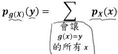
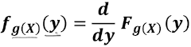
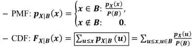
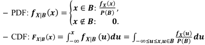
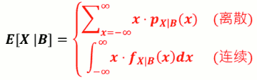
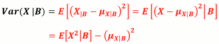

Week6 Week7 期望值 条件概率 失忆性
6-2: 期望值 I (EXPECTATION)
- 大数法则
- 想知道某事件发生的机率?
- 作很多次实验，记录实验中出现那个事件多少次。当实验次数接近无穷 多次时，这个比例就会越来越接近实际的机率!
- P(A) = limN→∞ (NA/N)
- 期望值 (Expectation)
- 做随机实验时，我们很希望能有某种估算
- 平均值是我们平常最常普遍的估算值
- 作两次实验的平均值是? (X₁+X₂)/2 = ?
- 不管我们做多少次实验，平均值都是一个随机变数，那不就 不能拿来估算?
- 所幸!当做的实验次数趋近于无穷多时，这么多次的实验的平均值 会收敛到一个常数!我们就用它来当作这机率分布的估算值吧!
- 若考虑某机率分布，作实验很多次若随机实验之样本空间为 {1,2, ... ,n}, 作实验N次，记录各结果出现 次数，分别为N₁,N₂,...Nn
- 平均值 (Mean): ∑x=ⁿ₁ (x·Nₓ)/N
- 根据大数法则 : ∑x=ⁿ₁ x·PX(x)
- Mean 值又称作期望值
- μY = E[Y]
- 对离散随机变数 𝑿 而言，我们定义其期望值
- E[X] = μX = ∑x=∞-∞ x·PX(x)
- 期望值不等于随机会发生的值!
- eg. PX(1) = PX(-1) = 1/2 => μX = 0 !!!
随机变量的函数之期望值
- 对于任一离散随机变量 X 而言，其 任意函数 g(X) 亦是一随机变量，亦有期望值
- g(X) 期望值定义为
- E[ g(X) ] = ∑x=∞-∞ g(x)·PX(x)
- 根随即变量的期望值公式相比，只是 x 变成了 g(x)
期望值运算性质
- E[ 3X² ] = ∑x=∞-∞ 3x²·PX(x)
- = 3·∑x=∞-∞ x²·PX(x) = 3·E[X²]
- 常数项可以提出来
- E[α·g(X)] = α·E[g(X)]
- E[α·g(X) + β·h(X) ] = α·E[g(X)] + β·E[h(X)]
- E[α] = α
常见的随机变量函数期望值
- X 的 nth moment:
- E[Xⁿ] = ∑x=∞-∞ xⁿ·PX(x)
- Ex: E[X²] 是 X的 2nd moment
- X 的变异数 (variance):
- E[ (X-μX)² ]
- 减去 期望值的 平方
- 全期望值公示
- E[Y] = E[E(Y|X)]
变异数 (variance)
- Variance通常符号表示为 σX² = E[ (X-μX)² ]
- 变异数隐含关于随机变数 X 多「乱」的信息
- 变异数的开根号便是标准差 (standard deviation)
- σX = √Variance
- 性质:
- if a constant is added to all values of the variable, the variance is unchanged:
- Var[X + a] = Var[X]
- If all values are scaled by a constant, the variance is scaled by the square of that constant:
- Var[aX] = a²Var[X]
- if a constant is added to all values of the variable, the variance is unchanged:
- 双变量 期望值，Variance，见第8章
Variance 便利算法
σX² = E[ (X-μX)² ]
- = E[ X²-2μX·X+μX² ]
- = E[X²] + E[-2μX·X] + E[ μX² ]
- = E[X²] - 2μX·E[X] + μX²
- = E[X²] - μX²
=> E[X²] = σX² + μX²
常见离散分布之期望值/变异数
- X~Bernouli(p) :
- μX = 1·p + 0·(1-p) = p
- σX² = E[X²] - μX² = ∑x=¹₀ x²·pX(x) - μX²
- = 1²·p + 0²·(1-p) - p² = p(1-p)
- X~BIN(n,p) :
- μX = np
- σX² = np(1-p)
- X~GEO(p) :
- μX = ∑x=∞0 x· (1-p)x-1·p = 1/p
- σX² = E[X²] - μX² = (1-p)/p²
- X~PASKAL(k,p) :
- μX = k/p
- σX² = k(1-p)/p²
- X~POI(α) :
- μX = α
- σX² = α
- X~UNIF(a,b) :
- μX = (a+b)/2
- σX² = 1/12·(b-a)(b-a+2)
几率推导奥义： 「凑」字诀
- 以 X~POI(a) 为例
- X~POI(a) 概率公式是什么？
- PX(x) = (aˣ/x!)·e⁻ª , x=0,1,2,...
- 我们手上能利用的公式有哪些？
- ∑x=∞0 (aˣ/x!)·e⁻ª = 1
- 开始推导:
E[X] = ∑x=∞0 x·(aˣ/x!)·e⁻ª
x 和 x！约分，变成 (x-1)! , 这样 ∑ 运算就不能包括 x=0了， 因为 阶乘对负数没有定义
E[X] = ∑x=∞1 (aˣ/(x-1)!)·e⁻ª
使 a 的指数形式 和 阶乘 保持一致
E[X] = a·∑x=∞1 (aˣ⁻¹/(x-1)!)·e⁻ª
令 x' = x-1
E[X] = a· ∑x'=∞0 (aˣ'/x'!)·e⁻ª = a·1 = a
σX² = E[X²] - μX² = E[X²] - a²
和 E[X] 类似， 可以推导处 E[X²] = a² + a , 所以
σX² = a
Quiz
quiz...
1. 一个随机变数X, E[X]=μ, Var[X]=σ², σ>0 请问下列何者叙述正确(正確選項只有一個) - Y=-X, E[Y]=-μ, Var[Y]=σ² - 正确: E[-X]=-E[X] , Var[-X]=(-1)²Var[X] - Y=(X-μ)/σ² 会是一个均值为1，且标注差也为1的 Gaussian 随机函数 - ❌ - Y=-μ·X , 则 E[Y]=μ², Var[Y] = -μ²σ - ❌ - Y=2X+4 , 则 E[Y]=2μ+4, Var[Y] = 2σ² - ❌ Var[Y] = 4σ² 2. 小米到學校後才得知今天 要小考，但是上課睡覺、下課玩的小米什麼 都沒有準備，考卷發下來後，發現考題是5題選擇題，每題都有 A、B、C、D四個選項，每題只有一個正確答案，每題20分。已知小米決定每題都猜C，隨機變數S代表小米這次考試總共答對的題數，可以發現S是個Binomial Random Variable，請問小米答對題數的期望值是多少 E[S] = ? - E[S]= np = 5*0.25 = 1.25 3. 承續上題小米的考試，已知小米全部都猜 C，而且又已經知道這次考試第一題答案真的是C，而隨機變數S代表小米這次考試總得分，S的變異數是Var[S]=σ², 请问σ是多少? - 注: 已经不是 Binomial 分布了 4. 阿壘投籃平均進球率是 60% ，某日他好友阿拓在旁提議 ，如果阿壘可以連續進 10球，就停止射球並且阿拓會請阿壘一瓶運動飲料。隨機變數B是指阿壘這場賭注裡總共的進籃球數 (ex: B=6 就是指阿壘只投進六球，第七球沒投進)，則請問 E[B]=? - note: 不是简单的计算几何分布的期望值，因为第10球和前面的9球不一样，而且投中第10球后，就结束了 - p投不进=0.4, E[B] = ∑i=0⁹ i*pmf(i+1) + 10* (0.6**10) ```python >>> sum( [ i* stats.geom.pmf( i+1, 0.4 ) for i in range(10) ] ) + 10* (0.6**10) 1.4909300736 # 暴力验证 >>> p = 0.4 >>> r = 0 >>> for nBallScore in xrange(11): ... x = nBallScore +1 ... r += (1-p)**(x-1)*( p if nBallScore <10 else 1 ) * nBallScore ... >>> r 1.4909300736 ``` 5. 某國的籃球 聯盟季後賽，由東隊對上 西隊 ，要在 5場比賽內決定 誰是這國家今 年最強的籃球 隊伍，當某一隊伍 取得 3場勝利的時候 ，這季後 賽馬上就結束確 定由三勝的球隊取得最後的冠軍寶座 。假設按照 幾年來的對戰統計 ，一場東隊 碰上西隊 的比賽，東隊獲勝的機率 是 60 %，而西隊獲勝的機率 則是 40 %。隨機變 數 N代表這次季後賽在總冠軍確定時，總共比賽的場數。請問N的期望值是? - 同样，这也简单的计算 PASKAL 期望值，因为到第5场就结束了 - N 可能等于3,4,5 - 4.07 ```python >>> p = 0.6 >>> >>> 3*p**3 + 3*(1-p)**3 0.84 >>> 4*p**3*(1-p)*3 + 4*(1-p)**3*p *3 1.4976 >>> 5*p**2*(1-p)**2 * 6 1.7280000000000002 >>> 1.7280000000000002 + 1.4976 + 0.84 4.0656 ``` 6. 小惠拿到了全校身高，性别的资料。發現全校的身高資料是個Gaussian Distribution H~Guassian( 178.32, 5.83 )。并且发现 测量用的尺有兩個地方設計不良： - 1. 用皮尺去量公正尺上一毫米(mm)的刻度，發現皮尺量出來是1.1毫米 - 2. 皮尺並不是從0 公分 做為開端，竟然是以 1 公分 做為開端，也就是量身高的時候醫師替各位同學都多加 1 公分了 - 發現這件慘案後，不僅全校剛剛量測結束的身高資料都錯誤，小惠的研究也陷入困境。但是小惠突然想起 丙紳老師教授過隨機變數的性質，發現如果皮尺只有這兩種誤差的話，那麼這些資料是可以還原成正確的身高資料的! 也就是假設隨機變數 X是隨機找一位小惠國中同學的真正身高(單位 cm)，則可以藉由小惠剛剛發現的兩種誤差推導出 H 與 X 的關係，則X 也就是全校同學的真正身高資料就可以還原了。 - 請問下列敘述何者正確? (正確的選項只有一個) - 小惠全校真實身高的標準差為5.3 cm - ❌ 若 μX = E[X], 则 μX = 1.1μH + 1 - ❌ Var[X] = 38.44 - ❌ 若存在函数 g(x) 使得 H=g(X), 则可以推得 随机变数H,X 的标准差 σH, σX , 会存在 σH = g( σX) 的关系 - H = 1 + 1.1X => X = (H-1)/1.1 = H/1.1 - 1/1.1 - E[X] = E[H]/1.1 - 1/1.1 = 178.32 /1.1 - 1/1.1 = 161.2 - Var[X] = Var[H]/(1.1**2) = (5.83**2)/(1.1**2) = 28.09 - σX = 5.3 - 5.83 ≠ 1 + 5.3*1.1 = 1 + 5.3*1.1Week7
7-1 期望值II
- 对连续的随机变数X而言，想求期望值，我们用类似 离散随机变数的方式出发
- 将X的值 以Δ为单位 无条件舍去来近似结果 离散随机变数 Y
- 当 Δ → 0时， X≈Y , 当Δ趋近0的时候，Y接近Y
- X∈[0,1Δ) -> Y=0Δ
- X∈[1Δ,2Δ) -> Y=1Δ
- X∈[nΔ,(n+1Δ) -> Y=nΔ
- 根据第五周
- pY(nΔ) = P(nΔ ≤ X < nΔ+Δ) ≈ fX(nΔ)·Δ
- E[X] = limΔ→0E[Y] = limΔ→0 ∑n=-∞∞ nΔ·PY(nΔ)
- = ∫-∞∞ xfX(x)dx
- 即， x乘上pdf,然后积分
- 一般来说, 求一个 函数 f(x) 在 x∈ [a,b] 之间的均值, 一般是 求出原函数F, 均值就是 (F(b)-F(a))/(b-a)
- pdf 本身就蕴含一点均值的计算，求期望值只需要计算 F(b)-F(a) ?
随机变数函数 期望值
- 对于任一连续随机变数X，其任意函数g(X)亦是一随机变数
- E[g(X)] = ∫-∞∞ g(x)fX(x)dx
常见连续分布的期望值/变异数
- X ~ Exponential(λ)
- μ = 1/λ
- σ² = 1/λ²
- X ~ Erlang(n,λ)
- μ = n/λ
- σ² = n/λ²
- X ~ Gaussian(μ,σ)
- μ = μ
- σ² = σ²
- X ~ UNIF(a,b)
- μ = (a+b)/2
- σ² = 1/12 · (b-a)²
期望值推导
- 一些有用的微积分性质
- e
*𝑑*= 𝑑e* - ∫U𝑑V = UV - ∫VdU
- ∫c𝑑x = ∫𝑑cx , c 是常数
- ∫pdf = 1
- e
7.2 隨機變數之函數
- 随机变数X的任意函数g(X)也是一个随机变数
- 通常被称为 Derived Random Variable
- 从 random variable X 衍生出来的一个新的random variable
如何求 g(X)几率分布?
- 若X为离散
- 直接推 g(X) 的 PMF
若X为连续
- 先推 g(X)的CDF， 再微分得到PDF
Ex:某宅宅超爱战LOL。每次一战就连续战 𝑿 场不可收拾，已知 𝑿~GEO(0.2)。某宅宅内心仍有 一点清明，其良心亦会因战过度而内疚，依战的次数 多寡，内疚程度 𝒀分别为1, 2, 3 不同等级:
⎧ 1, if 1≤X≤3 Y = g(X) = ⎨ 2, if 4≤X≤6 ⎩ 3, if X≥7- 问Y=g(X)的几率分布?
- 解: X~GEO(0.2) => pX(x) = (1-0.2)x-1·0.2
- pY(1) = pX(1)+pX(2)+pX(3)
- = 0.2 + 0.8·0.2 + 0.8²·0.2
- pY(2) = pX(4)+pX(5)+pX(6)
- = (0.8)³·0.2 + (0.8)⁴·0.2 + (0.8)⁵·0.2
- pY(3) = P(Y=3) = 1-pY(2)-pY(3)
- pY(1) = pX(1)+pX(2)+pX(3)
- 离散g(X)
- Y = g(X) 的 PMF为
- 
- 连续g(X)
- 先计算g(X)的CDF:
- Fg(X)(y) = P[g(X)≤y]
- 若 g(X)可微分, 再对y微分得到PDF:
- 
- 先计算g(X)的CDF:
连续g(x) = aX + b
- Ex1: 若Y=3X+2, 请问Y的PDF 跟fX(x)之关系为何?
- FY(y) = P(Y≤y)
- = P(3X+2≤y)
- = P(X≤(y-2)/3 )
- = FX( (y-2)/3 )
- fY(y) = fX( (y-2)/3 )·(1/3)
generic solution:
- fY(y) = (1/|a|)·fX( (y-b)/a )
Ex2: X~Exponential(λ) , Y = 2X
- fX(x) = λe-λxu(x), Y=2x (a=2,b=0)
- 这里 u(x)是工程上常见的一个函数，表示只有x>0时有值，即x>0时u(x)=1, 其他情况u(x)=0
- fY(y) = (1/|a|)·fX( (y-b)/a )
- = 1/2·λe-λ·y/2·u(y/2) (a,b代入)
- = λ/2·e-λ/2·y·u(y)
- => Y~Exponential(λ/2)
- 连续g(x) = aX² + b
- Ex: Y = 2X²+1, X~UNIF(-1,7), 求 Y的PDF
- 不要好高骛远，先算CDF
- FY(y) = P(Y=2X²+1≤y)
- = P(X²≤(y-1)/2)
- = P( -√((y-1)/2) ≤ X ≤ √((y-1)/2) )
- = ∫-zzfX(x)dx , 令 z = √((y-1)/2)
- 需要注意积分的范围, 这里注意 Y > 3的情况
- y≤3: FY(y) = ∫-zz1/8dx =
- y>3: FY(y) = ∫-1z1/8dx =
- 微分得到 fY(y)
7.3a 条件概率分布
- Ex:为了更了解宅宅的心，店员妹亦开始战 LOL。 已知店员妹战LOL场数 𝑿~UNIF (1, 5)。若已知 店员妹战了两场仍战意甚浓、继续战。请问在此情况下，店员妹 今日战LOL场数 𝑿 之机率分布为何?
- 条件 B: 已战两场 仍想战
- pX|B(x) = P(X=x|B) = P(X=x,B)/P(B)
- = (1/5) / (3/5) = 1/3, x∈B:x=3,4,5
- = 0, x∉B:x=otherwise
- 若𝑿是一离散随机变数，其PMF为 𝒑𝑿(𝒙)。若已知某事件 𝑩 已发生，则在此情况下 之条件机率分布为:
- 
- Ex:店员妹等公交车上班。通常等公交车的时间 𝑿， 从零到十分钟间可能性均等。若店员妹已等了 五分钟车还没来。请问在此情况下，等车时间 𝑿 之机率分布为何?
- B: X>5 => P(B)=0.5
- fX|B = x∈B: fX(x) / P(B)
- = x∉B: 0
- 若𝑿是一连续随机变量，其PDF为 𝒇𝑿(𝒙)。若已知某事件 𝑩 已发生，则在此情况下 之条件机率分布为:
- 
- 条件期望值 Conditional Expectation
- 
- 
7.3a 失忆性 (Memoryless)
宅宅与店员妹相约出门。宅宅出门前在战LOL，场数 𝑿~GEO (𝟎.2) 。店员妹等了两场后，宅宅还在玩。 店员妹甚怒，怒催宅宅。宅宅曰「快好了、快好了」。问宅宅剩余场 数 𝑿’ 之机率分布为何?
店员妹与宅宅相约出门。店员妹出门前化妆时间为 𝑿(小时)， 𝑿~Exponential(𝟏)。经过一小时后， 仍未完成。宅宅甚怒，怒催店员妹。店员妹曰「快好了、快好了」。 问店员妹剩余化妆时间𝑿′机率分布为何?
Geometric 跟 Exponential 机率分布 皆有失忆性的性质
- 不管事情已经进行多久，对于事情之后的进行 一点影响都没有!